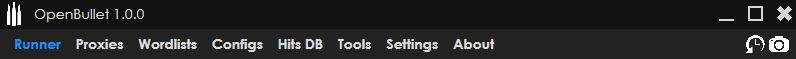
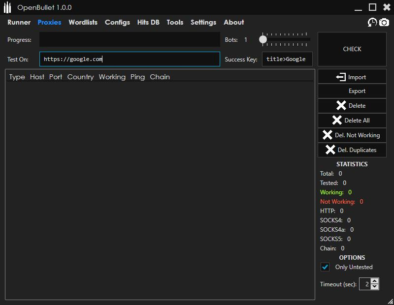
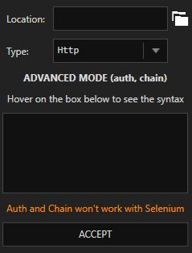
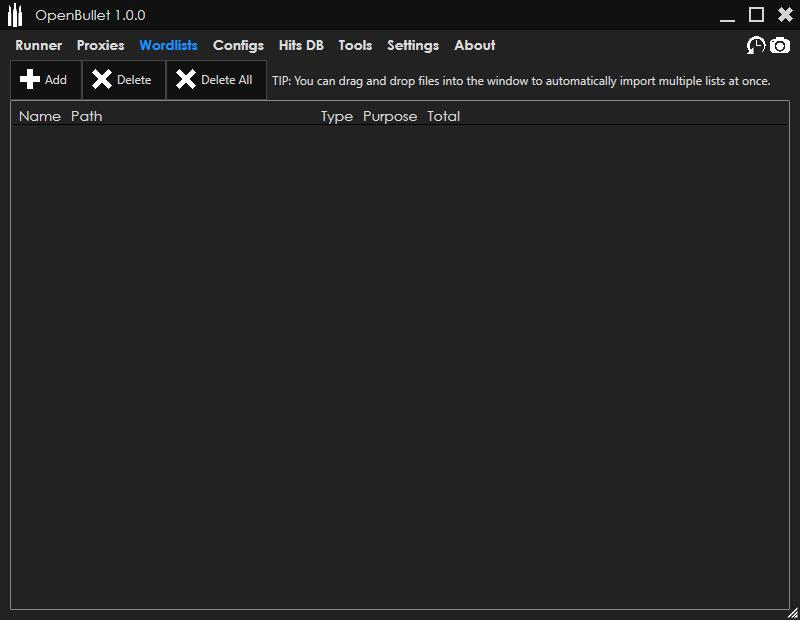
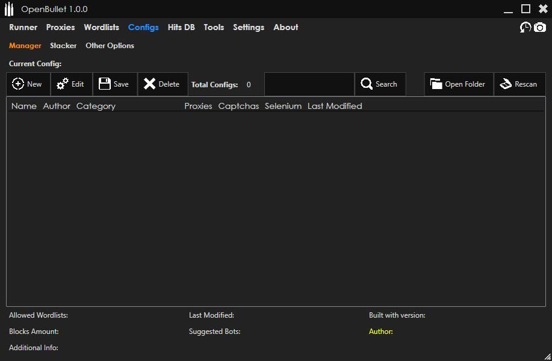
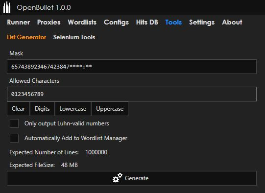
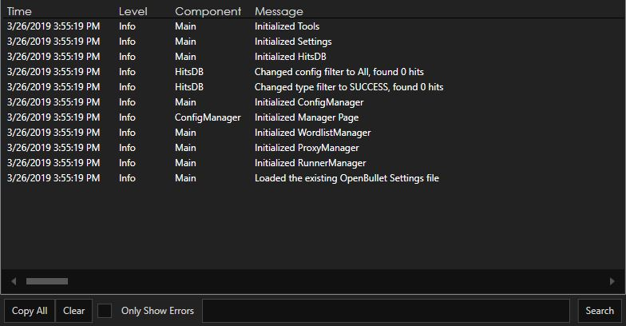

Before you start
Please read the license agreement if you want to use this software.
Getting started
When you first start OpenBullet, it will generate the default settings files and the database where all the hits (and more) will be stored.
You can notice a menu in the top part that lets you access all the different functionalities of OpenBullet
At the right of the window there are two buttons, used to view the program's log (it must be enabled in the settings first) and take a screenshot of the window.
Runner Manager
When you click on the

The 'Runner' mentioned in the message is a worker that takes some data from a Wordlist and executes the multi-threaded tasks basing on a previously made Config file.
The Runner overview, visible in the Runner Manager page, looks like this

You can quickly see the progress, the Checks Per Minute (CPM) and the hit count of the Runner. The Runner's fields like the number of bots to use or the Config file to use can be set directly from this screen by clicking on the corresponding label.
If you click on an empty area of the Runner overview, the complete Runner page will appear

From this page you can easily see the list of hits and the log for the past tasks that the Runner performed.
Proxy Manager
The Proxy Manager lets you import proxies and test them against a custom website to see if they provide full access to the internet. Proxies are stored inside the OpenBullet database so you don't lose them when closing the program.
It supports proxies of the types HTTP(s), Socks4/4a/5 and Proxy Chains. Proxies that require authorization through username and password are supported. When importing proxies that require authorization or that are chained together you will need to use a custom syntax.
Wordlist Manager
The Wordlist Manager lets you import wordlists from the disk, in order to use them (along with a Config) to test a website. Only the file information is saved in the database, because the files on disk can get pretty big and it's better to leave them where they are.
Config Manager
The Config Manager will display all the Config files that are stored inside the 'Configs' folder of the program. Configs are not stored inside the database to allow for quick edits directly on the files. Configs can be placed in subfolders named after the Category you want to be displayed. If you add new Config files to the folder, click the Rescan button in order to let OpenBullet detect them and add them to the displayed list.
This system is very handly when you have multiple computers and need to share Config files between them. You can simply find a Cloud-based automatic sync client (e.g. Mega.nz, Dropbox, Google Drive) and setup the Config folder on each client so that a change in a folder will immediately reflect inside the others. At this point you just need to click the Rescan button to have your newly created Configs without needing to manually transfer them.
When you select a Config from the list, additional information will be displayed at the bottom.
If you click the Edit button, the selected Config will be loaded into Stacker. For an in depth guide on Config creation click here.
Hits DB
The Hits DB is a visualization of all the hits found while running Configs. The hits contain information such as the data scraped from the website, the input data that lead to a successful scrape and the proxy that was used.
The hits are all stored inside the database so they aren't lost when the program is closed.

List Generator
The List Generator allows you to generate all the possible combinations starting from a base string with jolly characters, using a character set. Be careful because the size of the generated list grows exponentially basing on the number of jolly characters and the size of the character set.
Settings
The settings are split into RuriLib settings, that will affect the Runner behaviour, and OpenBullet settings, which only affect the GUI.

Log
The OpenBullet log displays a list of information (including warnings and errors) that can help debug an issue. The log is disabled by default, and can be also written to a file that is cleared every time you launch the program.
